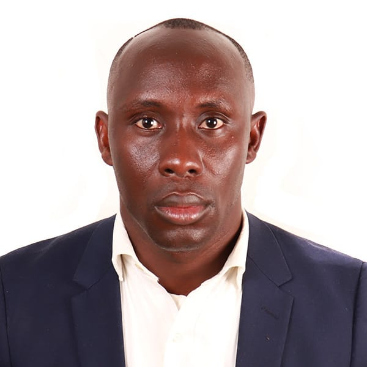

Michael Olalekan G.

Professional Summary
I am an aspiring software developer with a passion for coding and problem-solving. Currently learning languages like HTML, CSS, Python, Java, and JavaScript. Eager to contribute to innovative projects and grow in the dynamic tech industry.
Educational Background
- National Diploma in Public Administration - Crown Polythenic. (2008- 2011)
- Web development Bootcamp - Udemy (2023-2024)
Work Experience
- Head of Talent Management - Proventus International.
August, 2014 - May, 2017
- Developing and retaining employees through training, career development, and performance management.
- Administering employee compensation, benefits, and rewards programs.
- Handling employee concerns, grievances, and maintaining a positive work environment.
- Legal Compliance:
Ensuring compliance with labor laws, regulations, and company policies.
- Lead Associate - Makarios.
-
June, 2017 - Present.
- Ability to lead by example, guide, and motivate team members.
- Effective communication with colleagues and clients
- Aptitude to identify and resolve issues swiftly and efficiently.
- Collaborating with other departments to meet collective goals.
Overall -Skills
- Communication skills
- Administrative skills
- Coaching skills
- Active listening
- Teamwork